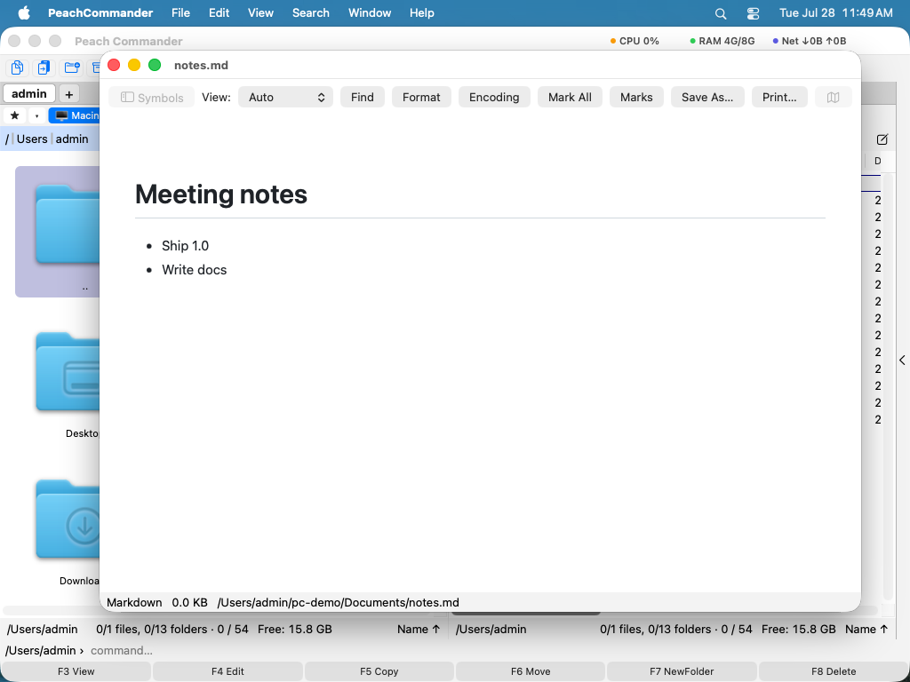

Fájlok megtekintése
A Peach Commander beépített megjelenítővel rendelkezik, amely lehetővé teszi, hogy belenézzen egy fájlba anélkül, hogy másik appot nyitna meg vagy megváltoztatná a fájlt. Nyomja meg az F3-at a kurzor alatti elemen, és a megjelenítő azonnal megnyílik, még nagyon nagy fájloknál is. Automatikusan kiválasztja a tartalom megjelenítésének legjobb módját: olvasható szöveg, szintaxisszínezett kód, nyers hexadecimális kiíratás vagy teljes méretű kép. Egy fájlt előnézhet közvetlenül az ablakon belül is a Gyorsnézet segítségével, vagy átadhatja a macOS Quick Looknak.
Fájl megtekintése
- Vigye a kurzort egy fájlra az aktív panelben.
- Nyomja meg az F3-at (vagy válassza a Megtekintés lehetőséget a Fájl menüben). A megjelenítő a saját ablakában nyílik meg.
- Használja az eszköztárat a tartalom megjelenítési módjának váltásához: Szöveg, Kód, Hex, Kép vagy Renderelt. Hagyja az automatikus beállításon, hogy a Peach Commander döntsön.
- Görgessen a nyílbillentyűkkel, a Page Up/Page Down-nal és a görgetősávval. Hosszú szövegnél kapcsolja be a minitérkép gombot, hogy egy pillantással lássa és bejárja az egész fájlt.
- Nyomja meg az N-t a következő kijelölt fájlra ugráshoz, vagy zárja be az ablakot az Esc-cel.

(Ábra: egy szövegfájl megtekintése, a megjelenítésválasztóval és a minitérképpel az eszköztárban.)Szöveg keresése és a kódolás megváltoztatása
- Nyomja meg a Ctrl+F-et a fájlon belüli kereséshez. Nyomja meg az F3-at a következő találatra ugráshoz, a Shift+F3-at az előzőhöz.
- Ha a szöveg zavarosnak tűnik, kattintson a Kódolás gombra az eszköztárban (vagy nyomja meg az E-t) a szövegkódolások végigjárásához, amíg helyesen nem olvasható; az automatikus beállítás általában eltalálja.
- Nyomja meg a W-t a hosszú sorok sortörésének átkapcsolásához.
Gyorsnézet és Quick Look
A Gyorsnézet élő előnézetet mutat abban a panelben, amelyet nem használ, így folytathatja a böngészést az egyik oldalon, miközben a másikon előnéz.
- Nyomja meg a Ctrl+Q-t. Az inaktív panel előnézeti területté válik.
- Vigye a kurzort különböző fájlok fölé az aktív panelben mindegyik előnézetéhez.
- Nyomja meg a Ctrl+Q-t újra, vagy az Esc-et, hogy a panelt normál fájllistává állítsa vissza.
Egy gyors, magától a macOS által kezelt teljes képernyős előnézethez nyomja meg a Cmd+Y-t (Quick Look). Nyomja meg a Cmd+Y-t vagy a szóközt újra a bezárásához.
Az információs oldal az oldalsó panelen
Az oldalsó panelen (Nézet > Előnézeti panel, vagy Cmd+Shift+P) van egy Információ oldal, amely a kurzor alatti elemet úgy mutatja, ahogyan a Finder információs oldalsávja.
- Az előnézet kitölti a panel teljes szélességét: ha szélesíti a panelt, az előnézet vele nő. Húzza a panel bal szélét, hogy szélesebbé vagy keskenyebbé tegye; a szélesség megmarad.
- Ez valódi macOS-előnézet, nem apró bélyegkép: minden formátum működik, amit a Gyorsnézet meg tud jeleníteni, a több oldalas dokumentumokat pedig az előnézeten belül lapozhatja végig.
- Alatta a név, a típus és a méret áll, majd hogy mikor jött létre és mikor módosult az elem, és melyik mappában van.
A kurzor mozgatásakor a név és az adatok azonnal frissülnek; az előnézet egy pillanattal később követi, így egy lenyomva tartott nyílbillentyű egy hosszú mappán át nem indít előnézetet minden érintett sorhoz.
Java .class fájlok visszafejtése
A Java Decompiler bővítmény bekapcsolva az F3 egy .class fájlon olvasható kódot mutat bináris adat helyett — a JAR vagy ZIP archívumban lévő osztályfájlokra is, amelyekbe be lehet lépni és kicsomagolás nélkül olvashatók.
A bővítmény maga nem tartalmaz visszafejtőt. Egy motort vezérel, amelyet Ön telepít, és a motor bármikor cserélhető:
- A CFR (MIT licenc) és a Vineflower (Apache 2.0) Java forráskódot állít elő. Tegye a
cfr.jarvagyvineflower.jarfájlt a motorok mappájába. - A Procyon (Apache 2.0) egy harmadik forráskódot előállító visszafejtő.
- A javap semmilyen letöltést nem igényel: minden JDK része, és Java forrás helyett bájtkódot mutat.
Semmi sem töltődik le Ön helyett: ezek harmadik felek saját licencű programjai, és a Peach Commander sem letölti, sem frissíti őket. A megjelenítő Motorok mappája… gombja megnyitja a hozzájuk tartozó mappát, és otthagy egy feljegyzést, amely megnevezi az egyes motorokat és a beszerzési helyüket. A javap kivételével mindegyikhez telepített Java kell.
A motort a megjelenítő tetején lévő menüvel váltja; a választott azonnal érvényes, az eredmény pedig megmarad, így két motor összehasonlítása ugyanazon a fájlon azonnali.
A bővítmény ki van kapcsolva, amíg be nem kapcsolja, a Beállítások ▸ Bővítmények oldalon — a legtöbben soha nem nyitnak meg .class fájlt, motor nélkül pedig úgysem használható.
Saját motor hozzáadásához hozzon létre egy decompilers.ini fájlt a motorok mappájában:
[myengine]
name = My Decompiler
kinds = class
tool = java
args = -jar {engine} {input}
engine = ~/tools/my-decompiler.jar
output = stdout
A {input}, {engine} és {outdir} helyére futtatáskor kerül az érték. A saját bejegyzései elsőbbséget élveznek a beépítettekkel szemben, és egy beépített név (cfr, vineflower, procyon, javap) újrahasználata lecseréli azt, nem pedig második bejegyzést hoz létre.
Billentyűparancsok
| Művelet | Billentyűparancs |
|---|---|
| Kurzor alatti fájl megtekintése | F3 |
| Csak a kurzor alatti fájl megtekintése (megjelölt fájlok mellőzése) | Shift+F3 |
| Megnyitás külső megjelenítőben | Option+F3 |
| Keresés a megjelenítőben | Ctrl+F |
| Következő / előző találat | F3 / Shift+F3 |
| Gyorsnézet a másik panelben | Ctrl+Q |
| Quick Look (macOS előnézet) | Cmd+Y |
| A megjelenítő vagy a Gyorsnézet bezárása | Esc |
Megjegyzések
- A megjelenítő csak olvasható. Egy fájl megváltoztatásához használja inkább a szerkesztőt (lásd Fájlok szerkesztése).
- A nagyon nagy fájlok késleltetés nélkül nyílnak meg: a szöveg egy gyors, görgethető nézetet nyit, a hex nézet pedig közvetlenül a lemezről streamel bármilyen méretben.
- Nyomja meg az F3-at egy mappán, hogy a tartalmának összefoglalóját és teljes méretét lássa a fájlbájtok helyett.
- A Renderelt mód formázott tartalmat jelenít meg, például weboldalakat; a hex mód a nyers bájtokat mutatja a karaktereik mellett, ami hasznos bináris fájlok vizsgálatához.
- Renderelt módban a szöveg kijelölhető és másolható, a Keresés pedig a renderelt oldalon keres. Azok a gombok, amelyek renderelt oldalra nem alkalmazhatók — Formázás, Kódolás, Összes kijelölése, Kijelölések és Ugrás —, halványan jelennek meg ahelyett, hogy hatástalanok lennének.
- A Formázás gomb újratagolja a strukturált fájlokat (JSON, XML, HTML, INI, YAML és továbbiak, ha telepítve van a megfelelő parancssori eszköz). Teljes leírása a Fájlok szerkesztése oldalon található, és itt ugyanúgy működik.